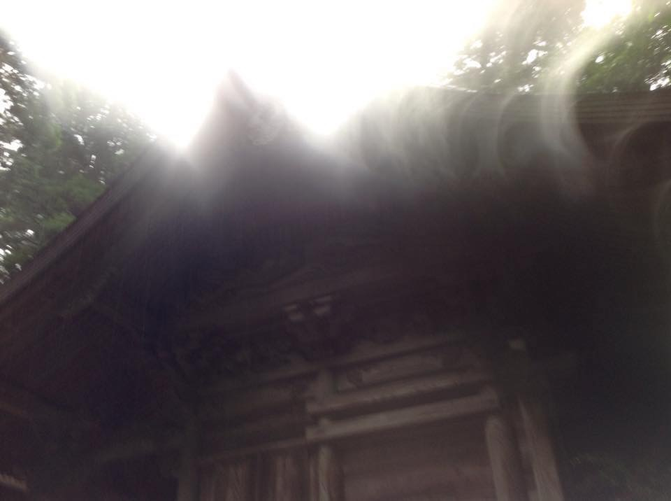

| ～あなたは脱ぐ必要がある～れものヘンタイの法則♡♪ | |
| よしい れも | |
| (2018) | |
～あなたは脱ぐ必要がある～
れものヘンタイの法則♡♪
ゆめのたね放送局パーソナリティ
よしい れも
聴き手 富士 三郎
なぜこの本を書いたのか
ワタシは、ゆめのたね放送局というインターネットラジオで、
ラジオパーソナリティをしている。
ご覧の通り、特に有名人ということではない。
はっきり言って最初は、やるつもりはなかった。
断れないまま、ここまで来てしまったのだ。
今では一定数のリスナーがつき、やめるにやめられなくなった。
ワタシの紹介でパーソナリティになった
クライアントや知人も増えた。
もちろん押し売りするつもりはない。
やったらいいなと感じた人に声をかけただけだ。
押し売りしてもワタシには一銭の利益にもならないのだ。
ワタシは、ゲスト優先でゲストのいる街に行って
収録するスタイルをとっている。
東京、名古屋、大阪、岡山、広島、松山、那覇。
ＳＮＳ全盛の時代、面白い人繋がる人は遠くの人が多い。
ゆめのたねは、そんなワタシにピッタリだった。
この度、ゆめのたね放送局の共同代表の岡田尚起さん、
佐藤大輔さん共著で
『ＳＮＳを超える第４の居場所』という
自分らしさを生かす成功法則を書いた本が出版された。
おそらくベストセラーとなっていくだろう。
ワタシのこの本
『～あなたは脱ぐ必要がある～ れものヘンタイの法則♡♪』は、
お二人の書いた、自分らしさを生かす成功法則を、
一パーソナリティの立場から、
怪しく、そして無責任に補完する内容になっている。
名著『ＳＮＳを超える第４の居場所』と合わせて
ぜひ読んで頂きたい。
ゆめのたね放送局は、
全国で５００名以上のパーソナリティを擁する、
業界トップのインターネットラジオ局だ。
パーソナリティは、様々な職業の方、
若しくは無職、学生、主婦。
ワタシ以上に個性的な方が山ほどいる。
すでに独自の分野で出版されている方も何人かいるようだ。
ワタシは特に、この分野で卓越した実績があるというわけではない。
ただこんなワタシでも、居場所をつくり、前に進み、
自分らしく輝くことができるのだということをここに記し、
ワタシを軽々と越えていってほしいと願っている。
後から来る方たちにその方向性を示していきたい。
第一に、私より若い人に、輝く大人の姿をみせてあげたい。
オヤジになっても、こんなにバカで、元気で弾けていいんだよと。
この後も、ゆめのたね放送局からワタシに続き、
続々と番組本が出版されるであろう。
その日を楽しみにして、ここでペンをおきたい。
いや、キーボードをたたくのをやめにしよう。
２０１８年夏吉日 よしいれも
ゆめのたね放送局岡山スタジオ
はじめに
～あなたは脱ぐ必要がある～
あなたは、この言葉を聞いて、どう感じるだろうか。
今話題のインターネットラジオ ゆめのたね放送局に、
れも の ヘンタイ の 法則 ♡♪ なる
なんとも怪しい番組がある。
しかも人気があるらしい。
この番組には、美女が次々とゲストで登場し、
脱がされていくというのだ。
そんな不健全かつ不謹慎極まりないことが
あっていいのだろうか。
羨ましい～♡
いや、許しがたいことである。
パーソナリティは、よしい れも
肩書は、ギャラクティックメンターとある。
よしい れも とは、一体何者なのか？
この本は、
ギャラクティックメンター よしい れも とは、
いったい何者なのか。
その目的はどこにあるのかについて
真摯に
時に怪しく
迫る本になっている。
九星氣学 梅田 佳代先生と
なぜこの本を書いたのか
はじめに
目次
第一章 れものヘンタイの法則♡♪
オープニング
（１） オープニング
（２） 二種類のオープニング
（３） オープニングには意味がある
レモとは
（１） レモの肩書
（２） ギャラクティックメンター
（３） チャネリング
アンドロメダの星群のエナジー
（１） 星群のエナジーとの出逢い
（２） 星群のエナジーの目的とは
（３） 星群のエナジーからの問い
（４） 星群のエナジーとの合一
第二章 ゆめのたね放送局
ゆめのたねとの出会い
（１）空気を読まないアキさん
（２）ゆめのたね放送局説明会
（３）岡田さんとの縁
（４）岡山新スタジオ？
番組誕生へ
(１ ) ゆめのたね大学８期生
(２ ) 番組名決定
(３ ) マスコミに公開
岡山スタジオオープン
（１）セレモニー＆パーティー
（２）憂鬱なワタシ
（３）インスピレーションを待つ
初収録
（１）どうにでもなれ！
（２）初収録へ
（３）ゆめのたね放送局共同代表 岡田尚起さん
第三章 レモに迫る
レモからの話
（１）れもヘン♡♪これまでの経緯
（２）なぜか中高の話
レモの伝えたいこと
（１） レモの詩
（２）永遠のギブ
（３）れもとは
（４）あなたは脱ぐ必要がある～なぜ美女は脱ぐ必要があるのか？～
（５）ゲストはレモをどう見てるの か( 収録 前 )
（６）収録後の取材
第四章 なぜ美女は脱がなければいけないのか？
完全にレモワールド
（１）レモは語る
（２）虫たちの変態とワタシたちのヘンタイ
（３）まなゆい的全受容のチカラ
（４）ゲストはどのように招致されるのか。
第五章 ハイヤーマインドの導き
いきなり始まったレモ講座
（１）ハイヤーマインドとは
（２）繋がると何が起こる
（３）スムーズに進む
（４）危険を知らせてくれる
（５）引き寄せのパワーが強くなる。
（６）ハイヤーマインドと繋がるのを邪魔するもの『エゴ』
（７）まとめ
第六章 ＪＡＰＡＮ女神化プロジェクト
レモが具体的なことを語らないワケ
（１）多くを語らないレモ
（２）光のエナジーからの忠告
（３）レモの願い
第七章 終章
（１）終わりに
（２）あとがき
ゆめのたね放送局 ～偉大なる自分を目覚めさせる場所～
勉強会の夜（撮影 尾上 達也）
第一章 れものヘンタイの法則♡♪
オープニング
（１）オープニング
そんなこと言っちゃだめえ～～～！！！ヘンタ～～～イ！！！
オープニング
冒頭、いきなり激しい叫びから入る。
ゲストで呼ばれた女性はここで目を丸くする。
そしてゲストは、みんなヘンタイさんと紹介される。
私は違うと言っても、もう遅い。
ここへ呼ばれてしまった以上、仕方がないのだ。
番組はどんどん先へ進む。
嫌だと言っても進む。
録り直しはしない。
終わりまでノンストップだ。
そう。
ここではレモの流儀があるのだ。
それでも、オープニングが終わり、番組が始まると、
レモは意外なほど優しくなる。
そして、とても聴き上手である。
つい心を許しそうになる。
しかし、ここで油断してはいけない。
レモはたまに無茶ぶりをしかけてくるのだ。
ある時は、ゲストの様子を見ながら、
恥ずかしいセリフやエッチなことを喋らせようとする。
それでも、レモは真剣である。
その姿がどんなに滑稽に見えても、
本人はいたって真面目なのだ。
彼はそれが女性性解放のワークになると信じている節があって、
ゲストの女性の色っぽさが足りないと徹底的にやらされる。
イマイチだと演技指導まで入る。
まずもって意味がわからない。
なお、オープニングには２種類あるらしい。
タレント 白川 夢華さん（撮影 福永 豊）
（２）二種類のオープニング
オープニングは大きく分けて二通りある。
叫びのバージョンとオネエバージョンだ。
叫びのバージョンは地下鉄等で聴くときは注意した方がいい。
イヤホンをしていてもその声が外に大きく漏れるのだ。
リスナーの話では隣の人が飛び上がったとの話もある。
以前は叫ぶ前にボリュームを下げてくださいねと
やさしく語りかけていたが、
最近はいきなり来るので要注意である。
この点は収録時にＰＡをいたく困らせる。
音割れはＰＡの最も避けたいところだからだ。
レモは全国各地に出没するので、
ゆめのたね放送局の各地のＰＡの間でも、
この件は徹底されている。
次にオネエバージョンだが、はっきりいってキモい。
聴かないほうがいい。
お世辞にも可愛いと言えないオヤジ、
レモから繰り出される吐息交じりのセリフに、
ゲストの女性は、まずは何が起こったのか、
自分がなぜここにいるのかがわからなくなる。
そして時間とともに冷静さを取り戻し、
このいかついオヤジと吐息交じりのセリフとのギャップに
苦笑するのである。
このオネエバージョンは、
２本録りするときの２本目に使われることが多い。
何故そうなのかとレモに訊いたことがある。
彼は、同じバージョンを同じ人に続けて
聴かせたくないからだと答えた。
レモは意外と小市民なのである。
ふざけているだけに見えるこのオープニングだが、
どうやら二つとも意味があるらしい。
ＳＳＷ 古賀 直樹 さんと
（３）オープニングには意味がある
オープニングには二種類あるという話をしたが、
それぞれに深い意味があるというのだ。
ワタシからみると、ただのヘンタイにしか思えないが、おっと失礼。
ここでもレモは真剣だ。
この問いにも明確に答えてくれた。
まず、叫ぶバージョン。これは男性性を表現してるという。
祭事や地鎮祭の降神、昇神の時に神職が発する「オー」という声。
これを警蹕(けいひつ)というが、
このレモの一見ありがたくない叫びは、
この神聖な警蹕の儀式だというのだ。
一般人のワタシにはいかんとも理解しがたいが、
真摯に話すレモの横顔に嘘はなさそうだ。
男性エネルギーを調整するということらしい。
次に吐息まじりのバージョン。
これは皆さんも今までの話の流れから察しがつくだろう。
その通りだ。それは女性性を表すという。
ごく普通のサラリーマンの家庭で育ったワタシは、
これを女性だと想像したくもないが、
女神性を呼び覚ます神聖な儀式だとレモは語る。
そのときのゲストに必要な女神エネルギーが現れるという。
確かにレモの収録にくると、身体が熱くなるという声を度々聞く。
ゲスト、パーソナリティ、収録サポートのＰＡからも一様に聞いた。
ゲストの中には、顔を真っ赤にして、ワタシに何かしました？
と訊く女性もいるくらいだ。
まずは一度体験してみてほしい。
もしかしてあなたもヘンタイ化されてしまうかもしれない。
さて、レモとは一体何者なのだろうか。
撮影 福永 豊
レモ とは
（１）レモの肩書
レモに肩書はあるのかと訊ねてみた。
ギャラクティックメンター
ＪＡＰＡＮ女神化プロジェクト 主宰
ゆめのたね放送局ラジオパーソナリティ
住宅・不動産コンサルタント／岡山永住コンシェルジュ
？？？
後半はなんとなくわかるのだが、
ギャラクティックメンター？？？
意味が分からない。
これは訊かねばならないだろう。(本当はどっちでもいいのだが)
その時、レモは遠くを見るような仕草で 、
場所を変えませんか？と伝えてきた。(サングラスなので実際は不明)
できるなら静かなところにして欲しいと言う。
ワタシは彼を郊外にある丘の上のホテルへ連れ出した。
はっきり言って面倒くさい。
ホテルに着くと、
彼はバラの香りのする冷たいミネラルウォーターを注文した。
ウザい・・・
(続く)
女神化されたご神木
（２）ギャラクティックメンター
ギャラクティックメンターとは何ですか？
ワタシはすぐに切り出した。ここでそれほど時間を割けない。
だが、案の定、レモからは、
わけのわからない話を聞かされることになる。
説明不能であるが、レモに訊いたまま、ここに記すことにする。
彼は生まれてから不思議な体験を数々している。
ただそれをここですべて書くことには無理がある。
それはまた別の機会に譲ることにして、
ここに繋がるまでの経緯を記したい。
（３）チャネリング
彼は数年前、チャネリングなるものを、
仲間３人で毎月１回（８時間）×１２回、
１年間かけてやったそうである。
チャネリングとは、
高次の霊的存在・神・宇宙人・死者などの超越的・
常識を超えた存在、
通常の精神(自己)に由来しない源泉との交信法、
交信による情報の伝達を意味する。
なぜそれをすることになったかも、別の機会に譲ることにする。
メンバーは、とある霊能者、パワーストーンショップのマダム、
そしてレモ。
チャネリングでは、明確な役割分担があった。
レモはアンテナ役(高次のものの情報と繋げる役)、
マダムは場を整え、記録を残し、霊能者は読み解く者だ。
そこにはさまざまなエネルギーや存在が連絡をとってきた。
日本の神々、西洋の神々、地球に旅行に来ている宇宙の友人たち、
太陽系のそれぞれの星のエナジー、
シリウス、アークトゥルス、プレアデス、オリオン、
まだ聞いたことのない星たちの名前もあった。
あるとき、レモを指名し連絡をとってきた存在があった。
その存在は、アンドロメダの星群のエナジーと名乗った。
アンドロメダの星群のエナジー
(１)星群のエナジーとの出会い
ここからはレモの言葉で書いている。
そのエナジーはとても大きなものだった。
目を閉じていても部屋中、
いやそれ以上に光あふれていることがわかるほどだった。
その存在は、霊能者を通して、
はっきりとワタシにメッセージを伝えてきた。
ワタシたちは、
アナタたちがアンドロメダと呼んでいる無数の星群のエナジーです。
アナタにお聞きします。
ワタシたちのメッセージを受け取りますか？
ワタシは勿論、はいと答えた。
最高に清々しいエナジー場の中での、
この眩しい体験は、この間ずっと続いていた。
（２）星群のエナジーの目的とは
なぜワタシたちがあなたに会いに来たか。
それはあなたがこれからするであろうことに関係しています。
あなたはそれが何かわからないでしょう。
わからなくて構いません。
いずれわかるときがくるでしょう。
（中略）
何か質問はありますか？
質問はなかった。
どんなことも受け容れることを常々決めていたからだ。
そしてついにその時がきた。
眩しく光あふれるその美しいエナジーは落ち着いた調子で語りだす。
ワタシたちは、これから、あなたとともにありたいと思います。
今からワタシたちが、あなたのなかへ入ることを許可して頂けますか？
ワタシは迷わず、はい。どうぞ。入ってくださいと答えた。
（３）星群のエナジーからの問い
星群のエナジーは、ワタシの答えを確認するやいなや、
すぐに語りかけてきた。
あなたがワタシたちを受け入れることで、
あなたに大きな変化が訪れます。
今までに一度もなかったくらいの大きな変化です。
それでも大丈夫ですか？
はい。それがこの世界のためになるなら、変化を受け入れます。
あなたの食べ物の好みは大きく変わるでしょう。
まず、動物の肉が食べられなくなるでしょう。
大丈夫です。いまでもほとんど食べていません。
私はサプリメントだけでも大丈夫です。
あなたの食事は１日１食以下になるでしょう。
大丈夫です。すでにそれに近い生活をしています。
アナタの自我はなくなるでしょう。
喜怒哀楽もなくなります。
ワタシには大きな欲はありますが、
個人的な欲はほとんどありません。
問題ありません。
あなたは周囲から見てまったくの別人に変わるでしょう。
今までの友人は疎遠になります
問題ありません。続けてください。
頭を使わなくなります。
インスピレーションを得て行動するようになるでしょう。
了解です。
アナタは新しい生き方を世界へ伝えていくでしょう。
とても多くの方に語りかけるようになるでしょう。
そのための新しい方法に出会うでしょう。
そのことをあなたは本にするでしょう。
以上ですべてです。
（４）星群のエナジーとの合一
すべて了解しました。
あなたがたがワタシをとても尊重してくれることが、
よくわかりました。
大丈夫です。すべて了解しました。
どうぞ。ワタシの中へ入ってきてください。
目を閉じたまま、ワタシは、ゆっくりと深い呼吸をつづける。
しばらくして、私の閉じた瞼から光が入り、
全世界が光の中に吸い込まれる。
ワタシの中で、ある種ビッグバーンのような体験があり、
宇宙の誕生を経験したかのようだった。
時間という観念が消えた。
永遠とはこのことをさすのだろうか。
ワタシは銀河となり星となり欠片となり、
この地の構成要素となった。
ワタシは一部であり、すべてでもあった。
しばらく時というものを忘れ、そこに漂っていた。
気が付けば現実という幻の世界が見えてきた。
大丈夫ですか？
霊能者のＹ先生の声を手掛かりに、この世界に周波数を合わせる。
次第にはっきりと店の中の様子が戻ってきた。
いつもと変わらない、パワーストーンショップ。
窓辺の壁には、虹色の光が乱舞していた。
一部始終を、いつものように、マダムが記録をしてくれていた。
そこには、他にも、にわかに信じ難いことが書き込まれていた。
ワタシたちはその文章を何度も読み返した。
その後、ワタシは、新しい生き方を伝えていく新しい方法、
媒体に出会う。
その名は、ゆめのたね放送局。
太陽とセラフィムの翼
第二章 ゆめのたね放送局
ゆめのたねとの出会い
（１）空気を読まないアキさん
あるとき、アキさんからメッセンジャーが入る。
この方は、とても不思議な人だ。
見事に空気を読まない。
ある面尊敬に値する。
人の話は、ほとんど聞いていない。
おそらく興味がないのであろう。
一方、自分の伝えたいお知らせは躊躇なく送ってくる。
その案内のひとつが、ゆめのたね放送局の説明会だった。
（１）ゆめのたね放送局説明会
ゆめのたね放送局は２０１５年６月に開局。
大阪府門真市が本社で、今では、東京、名古屋、岡山、広島、松山、
那覇にもスタジオがある。
パソコンやスマホから無料で聴くことができる。
その配信ページは年間２００万アクセスを超える。
ただこのときはまだ開局前だった。
局の代表は佐藤大輔さんと岡田尚起さんの２人。
ワタシは、来たものは断る理由がない限り受け取る主義で、
話を聴いてから断ればいいと思っていた。
それがなんとも、素晴らしい話だったのだ。
断る理由が全くない。でもやる理由もない。
困った。
（３）岡田さんとの縁
この時説明会に来られていたのは、岡田尚起さん。
コメディアンかと思ったのが最初の印象である。
話が上手い。立て板に水というか、
まるで海まで続く滑り台のようである。
少々トレーニングしたくらいでは、ここまで喋れないだろう。
それに相当の苦労人である。
余談ではあるが、
ワタシはこの岡田さんという名字の方に非常に縁があった。
いわばラッキーネームだ。
実家のお隣は岡田さんだ。
そして、若い頃住んでいた借家のお隣が、
なんと任侠の世界の親分のお宅で、その人も岡田さん。
引っ越した日、恐る恐る挨拶に行ったら、
その場所に住んでいる間、とても可愛がってくれた。
ワタシが出勤するとき、若い衆が整列して、
御兄さん行ってらっしゃいませ！
と深々と頭を下げるのには戸惑ったものだ。
ちなみに、ワタシの兄の名は、ナオキである。
こういう流れを大事にする私は、益々断れなくなった。
説明会が終わると岡田代表が、
パーソナリティの申込書の記入を促す。
ワタシは、取り敢えず書くだけ書いて持って帰ろうと思っていた。
ここで流されるのは嫌だったからだ。
奉還町商店街平日１４時
（４）岡山新スタジオ？
するとそこに来ていた商店街の方から情報を聞いた岡田代表が、
放送局にちょうどいい物件があるので、
今から見に行きましょう。と声をかけた。
不動産のプロでもあるワタシは
面白そうなので付いていくことにした。
スタジオにするには、絶好の物件だ。
みんなのテンションは自然と上がる。
岡田代表はそこにいた数名に一緒に写真を撮りましょうと言った。
テンションの上がっていたワタシも呼ばれてそこに並んだ。
その写真は、フェイスブックで、全国に向けてアップされた。
そこにはこう書かれていたのだ。
岡山スタジオの新パーソナリティメンバーの皆様です！
ご丁寧に、タグ付けまでされていた。
岡山スタジオの新パーソナリティ？
番組誕生へ
（１）ゆめのたね大学８期生
そんな感じで、優柔不断なワタシは、ゆめのたね放送局の一員になる。
但しパーソナリティはすぐに成れるわけではない。
ゆめのたね大学というところで、パーソナリティとしての心構えと
マインドセットを約３カ月間学ぶのだ。
運よく新しく開局する
岡山支局予定のあの場所で学べることになった。
ワタシたちのスタジオである。
まだクロスが貼られていないところはあるが、
少しずつ前に進んでいる。
ワタシたちと共に。
岡山スタジオは商店街から直接大きなガラス越しに
収録風景が見えるようになっている。
そのことがワタシたちのテンションをさらに上げた。
商店街の活性化としての装置としての期待もあり、
街の注目を集めた。
授業は毎月１日みっちりとある。
朝から夜まで、人によっては、モーニング、ランチ、
交流会そして五次会迄という猛者までいる。
実技の指導は特になかった。
しかしワタシたちへの注目度は凄かった。
ほぼ素人のワタシたちであったが、
一か月目から地方のテレビ局二社から取材が入り、
新聞社の取材も入った。
ゆめのたね大学取材風景
（２）番組名決定？
あるとき、ゆめのたね大学の中で、
番組名を決めるという課題が出た。
これが難題だった。
いろいろ考えた上で、これは自分で決めることは難しいと悟った。
一応本命で無難なもの、ちょっとひねったもの、
自分では選ばないけど人の番組だったら笑えるものと考えた。
仲間に投げてみた。瞬間で決まった。
それが、一番選んでほしくなかった、
れものヘンタイの法則♡♪だ。
決まったがいいが、これは使えない。
大体、親や家族や友人にも言いにくい。
（３）マスコミに公開
そうしているうちに
仕事が忙しくてそれどころじゃなくなってきた。
もう決めなければいけない段になって、
スタジオに地方紙と地方局が取材に来た。
そしてそこでつかまってしまったのだ。
どんな番組をするのですか？
その日最も触れてほしくない質問だった。
答えを用意してなかった私は、ピンチだったが、
持ち前のサービス精神を発揮して面白おかしく喋った。
もちろん中身は全然決まっていない。
取材陣を正面から見据え優雅に語りかける。
パーソナリティの、よしい れも です。
番組名は、れものヘンタイの法則♡♪です。
番組コンセプトは女性を美しくヘンタイ化させる番組です。
全国から美女を募集し、アナタをヘンタイ化します。
ヘンタイになることで美女は女神へと昇華します。
誰もが生まれ持った使命があります。
それを果たすためには、アナタは脱ぐ必要がある。
ヘンタイという言の葉に出会ってしまったアナタは、
もうただの美女ではいられない。
アナタは美女のまま枯れていきますか？
それとも、ヘンタイという言の葉に怯えながらも勇気を振り絞り、
その禁断の果実を齧り、女神へと昇華しますか？
どちらを選んでもそれは自由です
もうアナタを縛らない・・・。
意味不な言葉がすらすらと出てきた。
口から出まかせだった。
れものヘンタイの法則♡♪
番組名は確定してしまった。
もう後には引けないだろう・・・
岡山スタジオオープン
（１）セレモニー＆パーティー
２０１５年１０月１５日、
ついに岡山スタジオオープンの日だ。
ＮＨＫ，民放テレビ各局、新聞社の取材が入り、
ワタシたちのオープニングに花を添える。
オープニングセレモニーが一段落したところで、
ワタシたちのオープニングパーティーが始まる。
取材のメディアはそのまま残り、
我々の類を見ない盛り上がりを追った。
全国からパーソナリティ仲間も駆けつけてきてくれた。
中にはプロもいたので動画を撮り合う。
撮った動画はそのままＳＮＳで全国に流す。
オープニング 仲間と♪
（２）憂鬱なワタシ
楽しい宴の中、ワタシは少し憂鬱だった。
実は、この後に初収録を予定していたのだ。
岡田代表からは、事前に番組の進め方の雛形をもらっていた。
そして、番組をはじめるにあたって、どんな放送にするか。
オープニングの内容等最低限決めておくように
伝えられていたのだ。
何も決めてなかった。
というか、スタジオにいるとき以外は、
ラジオのことを考える時間は全くなかったのだ。
第一回目の放送は、パーソナリティ紹介という意味もあって、
４週連続同じ音源が流れることになる。
この音源は録り直しがきかない。
しくじったら、それがそのまま４回流れるのだ。
収録まで４０分を切っていた。
正直やばかった。
（３）インスピレーションを待つ
集中しよう。
ワタシは近くのカフェに駆け込んだ。
収録まであと２０分。コーヒーが来た。
目を軽く閉じて深くゆっくりと呼吸する。
見覚えのある光が見えてきた。
その時、言葉のイメージが流れ込んできた。
そのままペンを取り走らせる。
何だ？これは・・・。
うっ時間がない！
とりあえず、オープニングはこれで行こう。
撮影 福永 豊
初収録
（１）どうにでもなれ！
収録まであと５分 。
出てきた言葉のメモを手にスタジオに戻る。
見直す暇はない。
オープニング、
告知コーナー、
エンディング曲、
ジングルの選定。
３・２・１...
そして初収録が始まった。
オープニングの曲が流れる。
れものヘンタイの法則♡♪
ああ～～～そんなこと言っちゃダメ～～！
ヘンタ～～～イ！！
大変のハンタイはヘンタイな～のだ！ということを喋ちゃおう
タブーのブタに挑戦。そんなラジオ
タイヘンのハンタイってヘンタイ？？
ヘンタイって楽～になること？
この番組は、
ワタクシに見つかってしまった幸せなゲストさんをお呼びして、
そのタイヘンを、ヘンタイにしてお送りします。
楽～になることで、余分なストレスをスルーして
リラックスのリラックマ
気が付けばどうでもいい３０分。
あんた誰？ よしい れも です。
れものヘンタイの法則♡♪
さあ、今夜も始めていきましょう。
ヤケクソだ。あとの原稿はないが、
このまま突っ走るしかない・・・
（２）初収録
今夜は素敵なヘンタイさんをお招きしております。
ゆめのたね放送局共同代表！
われらがアニキ！
クラークこと、岡田尚起さんです。
超～愉しみ♡♪
この番組は、ご縁・応援・貢献をテーマに、
夢ある番組をお届けする。
ゆめのたね放送局岡山スタジオからお送り致します。
(ジングル)
よしいれものヘンタイの法則♡♪
とうとう、始まってしまいました。
この番組いったいどこへ向かっていくんだろう。
今日はキメますよ。(汗)
最初で最後のビッグゲスト、
ゆめのたね放送局共同代表、
われらがアニキ、
岡田尚起さんです。
この先の見通しはなかった。ほとんど口から出まかせである。
この後、前もってまとめていたプロフィール紹介をする。
時計をみた。
ここまでの消費時間たったの３分１５秒。
原稿の先はない。
岡田 尚起 さんと
（３）ゆめのたね放送局共同代表 岡田尚起さん
ここからは岡田代表に主導権をわたす。
さすが尚起さん、上手に回してくれる。
つかの間の安堵。
そして、やっぱりというか、
ヘンタイという言葉に食いついて広げてくる。
岡) やあ、レモさん、ヘンタイの法則♡♪最高ですね。
レ) もうヘンタイはね。ワタシのトレードマークですから。
（そんなの聞いたことがない！）
岡) いや～レモさんね。もう、このヘンタイのトレードマークって、
ある意味、ええなあって羨ましいんですよね。
だって、ヘンタイやからね。
何してもヘンタイやしＯＫや～んて。
レ) そうなんですよ。いいとこ気付いてくれました。
(とりあえずつなぐ)
岡) いや、ぼくもね。すごくいい人ぶってた時があって、
だんだんしんどくなってね。
だって正直僕、いい人じゃないしヘンタイやしね。
ちょっとヘンタイなことしたら、何でなんって怒られるからね、
それだったら最初からヘンタイでええやんけって
思いだしたこともあったんですよね。
だから僕もヘンタイの仲間としてね、
レモさんの番組を応援させていただきます。
レ) 有難いな～。力強いです。嬉しいなあ。
(なんかやたらテンション高いわあ。尚起さん。)
(中略)
このあと、尚起さんがいろいろ訊きだしてくれるはずだったが、
ワタシがその先を何も決めていなかったのもあって、
話はどんどん脱線していく。
気がつけば、二人でワオーーーと吠えている。
尚起さんはすでに進行役ではなかった。
二人は共犯者。
初収録からヘンタイな番組が完成する・・・(汗)
番組は未知の領域でエンディングを迎えた。
 岡田 尚起 さんと
岡田 尚起 さんと
第三章 レモに迫る
レモからの話
（１）れもヘン♡♪のこれまでの経緯
波乱のスタートのれもヘン♡♪だったが、
スタートしてから２年と８カ月になる。
番組の回数は１３２回を数えた。
当初、一人でスタートした番組は,
途中ゆめのたね１１期生の不思議ちゃん
セラピストみきちゃんを迎えた。
だが、リア充である、みきちゃんはそうそう続くはずがない。
やがて離脱し、また一人になった。
さて、れもヘン♡♪には必ずゲストが出るということだが、
レモは一人語りはしないのだろうか。
これもレモに訊いてみた。
（２）なぜか中高の話
他の番組で、ゲストを呼ばないパーソナリティもいますが、
あなたは一人語りはしないのですか？
レモの語ってくれた内容は、おおよそこんな感じだ。
レモは自分のことにはまったく興味がわかない。
これは子どもの頃からそうだった。
中学時代、
生徒会長に立候補したクラスメートのＯ君に応援演説を頼まれ、
面白おかしくほめ殺し、体育館を爆笑の渦にしたそうだ。
あまりにウケたので予定時間をオーバーし、
立候補したＯ君は、名前を名乗るだけで終わってしまった。
それでもＯ君はダントツのトップ当選。
何でもレモの得票が相当入っていたそうだ。
それをいいことに高校時代、
友達に唆され、
よせばいいのに、今度は自ら生徒会長に立候補した。
彼は自分のことをよく分かっていなかったようだ。
まったくウケないどころか、大スベリ。
廊下を歩けないくらいの彼の黒歴史の一つとなった。
なんてことはない。
レモは自分をほめるのは苦手なのだ。
レモの黒歴史の数々は番組でよく語られる。
レモの伝えたいこと
（１）レモの詩
番組を通して、レモは何を伝えたいのだろうか。
レモはある詩を示してくれた。
ワタシは
アナタを
ありのまま
真実のまま
映す
湖の水面(みなも)でありたい
その(愛の)さざ波を
途切れることなく
いつまでも
立て続けていく
アナタが無視しても
認めなくても
月のように
星たちのように
変わることなく
偉大なる法則のままに
I`m in love
ヨシイ レモ
（２）永遠のギブ
いきなりのキャラ変に驚いたが、
こういうことはレモにおいては、しばしば起こる。
だが、彼の言わんとすることはなんとなくわかるような気がする。
彼はギブアンドテイクではなく、
ギブアンドギブアンドギブアンドギブアンド・・・・・。
すなわち永遠のギブを伝えたいのであろう。
人がどうであろうが、
太陽のように、月のように、星のように、態度を変えず、
出来ることをひたすら続けていく。
それは決して理想論ということではなく、
出来ることを変えずにということである。
宇宙の法則のままの生き方、考え方、行動が出来れば、
いたずらに悩んだり、裁いたり、戦ったりすることがない。
宇宙の法則。
彼は銀河の法則と言うが、
そのさざ波を広げようとしているのだ。
そして、それは、湖面に立てた波紋のように、
止めなければ大きく広がっていく。
レモはそういった生き方を伝えているのだ。
そしてその行動は男性より女性の方が馴染みやすい。
月のような陰の力だからだ。
だからまず女性から、伝えていっているというのだ。
もちろん男性にもそういったセンスがないわけではない。
（３）レモとは
レモとは零望と書く。
ゼロをのぞむ？？
わけがわからない。
これもレモの言葉で答えてもらおう。
結果ばかり、答えばかり、
目に見えるものばかりで判断したくないのだという。
宇宙でいうと星の部分、星以外の部分。
質量は星以外の方が断然重いという。
星以外の部分は、見えないからといって、無いわけではない。
認識することができないだけだ。
認識する能力のないものが認識できないからといって、
大切なものを軽んじてはいけない。
ゼロは決してないわけではない。
認識できるものよりも随分あるのだ。
話は変わるが、
レモはドーナツであるよりはドーナツの穴でありたいともいう。
あってもなくてもいいのだが、
あれば持ちやすいし、食べやすいし、風味も増す。
そういう存在でありたいとも。
これは随分子供の頃から言っていたそうだ。
随分変わった子供である。
私には理解しがたい。
レモという名前はどこからもらったのかと訊ねると、
宇宙からもらったのだという。
ラ行の音は宇宙と親和性があるとも。
この辺はレモの感性からきた言葉なので流しておこう。
（４）あなたは脱ぐ必要がある
～なぜ美女は脱ぐ必要があるのか？～
レモは番組のメッセージの中で
あなたは脱ぐ必要があると語りかける。
あるとき、レモに娘がいたとして、
それよりさらに若い女性がゲストに来ていた。
レモはこの時も懲りずに同じように語りかけていた。
ワタシは、やはり理解できなかった。
いや理解したくなかったと言った方が正しい。
レモは人の親として恥ずかしくないのか？
ゲストの若い女性は
さすがに吹き出すのを懸命に堪えていたようだが、
別の日に、大阪スタジオで、
二日にわたってレモの収録に立ち会うことがあった。
ワタシは、そこに来るゲストが、
レモの問いかけにどのような反応を示すのか興味があった。
しかし、意外にも、
どの女性も非常に好意的にレモの話を聴いていたのだ。
もちろん、笑いを堪えてる姿は同じであったが。
レモは意外と女性に嫌われてないのかもしれない。
まだ確信のなかった私は、そこに来ていたゲストの女性に
取材だと称して、レモのことをどう思うか訊いてみた。
勿論、レモには内緒である。
（５）ゲストはレモをどう見てるのか
レモのこと、実際どう思いますか？
いえ、わからないです。
えっわからずに来たのですか？
ＳＮＳで話がはずんで、面白そうだから行くって。
会ったことないのですか？
ありません。
知らないのに来たのですか？
えっ、でも、とても誠実で丁寧な感じで、
大切にされてると感じましたよ。
会ってみて、思った通りだなと。
レモが現れ、いつものように収録が始まった。
終始笑いの中で収録が進む。
ワタシが感じたのは、
レモがゲストをコントロールしないところだ。
ゲストは初めて会ったとは思えないほどの
満面の笑顔で延々と喋っている。
たまにレモがボケたり、
軽い突っ込みを入れる以外は完全放置である。
こんな番組は見たことがない。
この時レモは自分の時計を押し忘れていた。
途中でＰＡに時間を確認しながら進めている。
そんなレモにゲストは大笑い、ますます番組が盛り上がる。
散歩道より
（６）収録後の取材
収録が終わり、もう一度訊いてみる。
どうでした？
今までラジオに何回か出たけど一番楽しかったです。
確かに楽しそうだった。また出たいとのことだ。
レモのラジオに出てパーソナリティになったゲストも多いという。
あと、クライアントからパーソナリティになった方も何人かいる。
こんなに正体不明の金髪ヒゲヅラのオヤジなのに、信頼されている。
ワタシはますますこのオヤジがわからなくなった。
おっと、肝心のことをわすれるところだった。
どうもレモにかかるとペースが狂う。
レモがこの強烈なイメージとは裏腹に、意外と真面目なことや、
ゲストに来る女性も、
それをなんとなく理解できていることもわかった。
ゲストは自分らしくいられる最高の時間を味わいにきているのだ。
女性はそのあたりは鋭い。
本質をつかんでいるのだ。
さて、レモに煙に巻かれないうちに訊いておこう。
牛窓にて
第四章 なぜ美女は脱がなければいけないのか。
完全にレモワールド
(１)レモは語る
美女は完成してしまってはいけない。
世界は刻々と移り変わっている。
昨日の美女は今日の美女とは限らない。
不変の美女、つまり女神とは、常に美しくあり続けるものである。
いや、身も心も魂もオーラも美しくあろうとするものである。
そのためには、それぞれが持っている、
美女という固定観念を一度脱がなければならない
（２）虫たちの変態とワタシたちのヘンタイ
レモは瞬間座り直し、再び語りだした。
虫たちを例にとると、とてもわかりやすい。
成長するために何度も脱皮(変態)を繰り返す。
蝶などは完全変態といって、芋虫からさなぎという姿になると
その中では一度ドロドロの状態になり、蝶になる準備をする。
進化した生命の人間は、それほどわかりやすい姿ではないが、
その過程を目に見えない部分で行うのだ。
ただし、一人でできないことはないが、なかなか難しい。
そこで、レモが番組の中でその機会を作ろうというのだ。
レモの特性は正義がないというところ。
いや誤解を生んではいけない。
こうでなければいけないという、
大小さまざまなルールを一旦外すのだ。
といっても、その場を作っている本人が、
がんじがらめだと意味がない。
レモは見事に正義がない。
自由である。
高千穂のカラスアゲハ
（３）まなゆい的全受容のチカラ
レモの話の中で、
よく、まなゆいという全受容の言霊メソッドが出てくる。
その中に出てくる、
受け入れ
認め
ゆるし
愛する
まなゆいの全肯定のチカラは、レモに共通するものである。
そういう意味でも、レモはゲストを一旦正義から解放するという。
それが、番組冒頭の雄叫びとささやきにつながるのだ。
一見ヘンタイとしか見えない、あのオープニングで、
固い枠を外すのである。
ここでやっと繋がったようである。
しかしまだ理解できない。
いや、したくない。
（４）ゲストはどのように招致されるのか
レモの番組のゲストはどうやって決まるのだろうか？
れものヘンタイの法則♡♪
番組名を聞くだけで怪しさが溢れている。
美女がこのような番組に本当に出たがるものなのだろうか？
これもレモに訊いてみよう。
どのような人にどのようなタイミングで声掛けするのですか？
ゲストはインスピレーションで声をかけるそうだ。
一種のナンパみたいなものですね。
レモは心外だとばかりにこちらをみつめる。
断られることはないのですか？
レモはあきれたかのように小首をかしげた。
断る人には最初から声をかけないのだという。
なぜ断らない人がわかるのですか？
レモはその人と会話する前にハイヤーマインドと話しをするのだという。
ハイヤーマインドですか？
第五章 ハイヤーマインドの導き
（１）ハイヤーマインドとは
ハイヤーマインドとは、自分の中に存在する、
高次元の心のことです。
ワタシたちには、純粋で無邪気な心、優しい心、反発する心など、
たくさんの心があります。
高次元の心とは、愛にあふれ、平和や幸せを創造する、
高い意識のことを言います。
神意識に繋がっている心と例えておきましょう。
ワタシがメモを取ろうとすると
こういうことを話すと、言葉にばかりとらわれる人がいますが、
これらは、あくまでも説明のための方便であり、手段です。
あくまでも、ひとつのイメージとしてつかんでほしい
とレモに注意された。
理解しやすくするためのたとえ話だということだ。
そういう類の話として聞いてほしい。
手段ではあるが真実ではないのだとも。
真実ではない？！
言葉にとらわれていないですか？
早速レモにたしなめられた。
めんどくさいと思ったが、レモの次の言葉を待った。
わかりました。続けてください。
（２）繋がると何がおこる
ハイヤーマインドは、何でも知っているマスターなので、
繋がることでワタシたちを一番いい方向へ導いてくれます。
では、ハイヤーマインドに繋がると、
どんなことが起きるでしょう。
まず、ひらめき、直感が鋭くなります。
『根拠はないけど、こっちにしよう！ 』
そんな感覚を経験したことはないでしょうか。
これは、ハイヤーマインドと繋がり、
メッセージを受け取っているということです。
選んだ結果は
やはりこっちにして良かった、
ということが多かったはずです。
（３）スムーズに進む
ハイヤーマインドと繋がると、物事がスムーズに進みます。
『悩まなくても、欲しい物（事）をいつの間にか手に入れている』
『難しいと思っていた仕事なのに、予期せぬ助けがあって、
意外と簡単に進んだ』
ただ楽しんでいるだけなのに、難なく自分が望む方向に進んでいる。
これが、ハイヤーマインドと繋がっている状態です。
いいですか？たとえ話ですよ。
レモは何度も念を押してきた。
書斎より
（４）危険を知らせてくれる
『なぜか気が乗らない。行きたくない』
『どうもこの場所は嫌な感じがする』
これも、ハイヤーマインドからのメッセージです。
ハイヤーマインドからのメッセージを無視して行動すると
・ケガをする
・電車が止まって遅れる
・車を運転する人は違反をして切符を切られる
・事故に遭う
など、思わぬトラブルに遭うかもしれません。
他にも
・急に発熱する
・だるくなる
・湿疹などが出る
など、体に出る方法で知らせてくれる場合もあります。
身体に起きる不調も、少し休んだ方がいい、
というハイヤーマインドの声なのです。
この声を無視すると
・頑張った仕事がキャンセルになる
・疲れから大きな病気になる
など、前に進むどころか、
停滞してしまうということになりかねません。
ハイヤーマインドは、大事に至る前に、
私たちに危険を知らせてくれるのです。
ハイヤーマインドの声は、心が忙しいと聞こえません。
小さな声にも耳にも傾けるようにしましょう。
書斎より
（５）引き寄せのパワーが強くなる
ハイヤーマインドに繋がれば繋がるほど、
自分自身の波動が高くなっていきます。
自分が高い波動になると、嫉妬やねたみ、否定的な考えなど、
日常におけるマイナスの波動を遠ざけることができます。
ハイヤーマインドと繋がることで、
愛あるものだけを引き寄せることができ、
豊かで幸せになります。
いつもハイヤーマインドと繋がっていられたら良いですが、
繋がるのを邪魔するものがあります。
それは、私たちの中に存在する『エゴ』です。
（６）ハイヤーマインドと繋がるのを邪魔するもの『エゴ』
エゴとは、『自我』とも呼ばれる場合がありますが、
自我は悪者ではありません。
ここで言うハイヤーマインドと繋がるのを邪魔しているエゴとは、
他人の事は考えず、
自分の利益ばかりを優先して考えてしまう考え方のことです。
柔軟さをなくした、
自己中心的な考え方とも言い換えることができるでしょう。
先にお伝えしましたが、ハイヤーマインドの基本は『愛』です。
エゴが前に出てくると、壁になってしまい、
愛に満ちた高次元の心であるハイヤーマインドに繋がることができません。
自分の心にゆとりがないと、エゴが顔を出します。
常にゆったりとした気持ちでいるように心がけましょう。
いかがですか？
ハイヤーマインドとは、自分の内側にあるマスターです。
イライラしていると、ハイヤーマインドとは繋がれません。
エゴと混同してしまうからです。
深呼吸をして、グラウンディングをしてみましょう。
のんびりリラックスしていると、ハイヤーマインドに繋がれます。
『ワタシから見えるもの、感じられるものはすべてワタシ』
世界で起きていることは、自分のことでもあると思える境地、
それがハイヤーマインドの世界です。
レモは、ワタシの宇宙はワタシが責任をとると言っているが、
これはどうやらこのことを言っているらしい。
自分の心がけ、エナジー次第で、思うままな宇宙がつくれるのだ。
レモは良く自分から見た宇宙と
他人から見た宇宙は微妙に違っているから、
人の宇宙は変えようとしなくていいとも言っている。
自分の宇宙を素晴らしくすれば、
必然かかわる宇宙にも、そのさざ波が届くのだとも。
自分の宇宙を素晴らしくすること＝もうすでに意識がハイヤーマインドに
なっているということなのだ。
みんながこのハイヤーマインドと繋がること、
宇宙意識になることで、
より素晴らしい未来が訪れることでしょう。
んっ。なんかまた話が違う方向へいってるような・・・
ワタシはレモのワンポイント講座を聴きに来たわけではない。
つまり、ゲストはハイヤーマインドからの声に従って
招致するということですね。
招致するのではなく、
ゲストに行きたいというハイヤーマインドの声を尊重するのです。
レモのゲストに限って、
ドタキャンとか、すっぽかしは今まで一件もないという。
どのゲストも喜んでやってきて、
いつ来るかわからない次の機会を楽しみにするというのだ。
レモの番組に出ることは、
パーソナリティやゲストの一部では、
ある種ステータスになっている。
どさくさに紛れて何か挿し込んできたようだが、
これはスルーしておこう。
じゅんさんとコラボ（撮影 福永 豊）
第六章 ＪＡＰＡＮ女神化プロジェクトとは
具体的なことを語らないワケ
（１）多くを語らないレモ
２０１６年１月１日ＪＡＰＡＮ女神化プロジェクトが始まった。
これについても、レモに訊いてみよう。
レモはこの件については、
これまであまり多くを語ってこなかった。
リスナーの方には気になる方も多かったと思う
ワタシが訊ねると
またその話題か・・・。
とでも言いたげにワタシを見る。
だが、ここで引き下がるわけにはいかない。
私が引く気配をみせなかったので、
レモは重い口を開いた。
アナタはワタシがスポンサーを付けて、
女神のような煌めく女性たちを全国から集め、
何かイベントをするのだろうと思われるかもしれないが、
これはそういったものではない。
ＪＡＰＡＮ女神化プロジェクトとは、
社団法人や協会のような団体を作るわけではない。
ここでは女性たちが行き過ぎた男性性を手放し、
本来持つ女神性を取り戻すサポートをしている。
レモはこのミッションに賛同する方たちのメンターとして、
さざなみのように優しさと影響力を与える
女神性溢れるリーダーを増やしている。
ＪＡＰＡＮ女神化プロジェクトとは、
その緩やかなミッションの総称なのだという。
（２）星群のエナジーからの忠告
ここでレモが一瞬沈黙した。
そして思い直したように語りだす。
実はいままで言わなかったことですが・・・。
アンドロメダの星群とのチャネリングの後、
鳥取の智頭というところに、
仲間とグループコーチングのようなことをする民泊に行きました。
そこでこの女神化プロジェクトの原型が出来たのですが、
それから８８日経った明け方、
３時になる少し前くらいだったでしょうか。
再び星群のエナジーと称するまばゆいばかりのエナジ―が、
ワタシに語りかけてきたのです。
ここでレモは再び黙った。
・・・・・。
ワタシはこれは夢だったと思っています。
自らに言い聞かすように語りだす。
内容はこうでした。
女神は偶像ではありません。
ワタシたちと同様の光でありエナジーです。
女神を使ってエゴに語りかけてはいけません。
いかなる方も区別せず、
そこにアクセスできるよう
アナタの語る女神は、
いつでもどこでも
オープンにしておいてください。
アナタはこのあと
沢山の方に出会うでしょう。
どうかその扉を
開いたままにしておいてください。
あなたと会うことを約束した
多くの魂のために・・・
その後、レモは、
ＪＡＰＡＮ女神化プロジェクトについて、
多くを語らなくなったそうである。
いや語れなくなってしまったと言った方が正しい。
但し、そのプロジェクト名については
今でも引き続き語り続けている。
それについてはどう考えているのだろう。
 高千穂にて
（３）レモの願い
レモは続けて語った。
地球は所有の星だ。それは決して悪いことではない。
個人や組織、団体が沢山のものに所有権を主張する。
だが、それが過ぎるとやがて争いや戦いがが起こり、
地球の進化はストップする。
宇宙には所有という概念がない。
もしあるにしても、
必要以上の所有権を主張することはないであろう。
だが、地球がそのようになるまでには、
まだまだ時間がかかるだろう。
地球もいずれかは与えあいの世界になることが望ましい。
レモはそのような世界が来てほしいと本気で思っているのだ。
そしてそれは押し付けであってはならないとも。
レモは、多くの考え方の一つとして、これからも発信し続け、
同様な考えの人たちと緩やかに連携し、
それぞれの場所でひろがっていくというのだ。
以上がＪＡＰＡＮ女神化プロジェクトを所有しない限定しない、
多くを語らないレモの理由である。
随分話が長くなってしまった。
高千穂にて
第七章 終章
（１）終わりに
突然ですが、今回はここまでにしたいと思います。
この本は、当番組、ゆめのたね放送局中四国沖縄チャンネル、
れものヘンタイの法則♡♪のリスナーさんから、
番組のインフォメーション、ガイダンスが欲しいという
要望に応えてのものです。
宇宙の法則（ 銀河の法則 ）や、愛とスピリットについて
詳しく書いて欲しいという声も聞いております。
だが、それは別の機会に譲りたいと思います。
いくらかの方にはセッションやお話会、塾等でお話ししていますし、
必要とされてないことの押し付けになってもいけないからです。
この本を通して初めて知り合うことのできた素敵な皆様、
出逢って頂いて有難うございます。
この機会をご縁に、ラジオ番組、Facebook、番組ページ等で
ぜひ繋がってくださいね。
その際訊きたいことや疑問に思ったことや、
エネルギーの使い方等、何でもお訊きください。
伝えたいことは無限にありますが、
必要な方に必要なだけ届けてまいりたいと思っております。
そして、希望が多ければ、
Facebookでも発信している愛とスピリットのメッセージ、
銀河の法則についての電子書籍化も考えております。
番組についても、書籍についても、
決してワタシ個人のものではなく、
皆様との共有のものと考えております。
これからも皆様と共に成長していけたらと思います。
どうかよろしくお願い致します。
まだまだ不十分で、納得できないことと思います。
いかんせんこのままだと終わりそうにありませんし、
さして有名でもないワタシがこのまま長々と文章を連ねても、
読む方の気持ちを考えるといささか心が痛みます。
話はまだ先があるのですが、
それはラジオの方で答えていこうと思います。
皆様には、
ここまで長い間おつきあいしてくださったことに感謝致します。
そして、宜しければラジオの方でもよろしくお願い致します。
高千穂にて
あとがき
ゆめのたね放送局
～偉大なる自分を目覚めさせる場所～
２０１５年５月、ワタシは、ゆめのたね放送局と出会った。
それまでのワタシは自身の中で眠る才能をはっきりと表に出せず、
苦しい社会人生活を過ごしてきた。
いや、苦しいということも
はっきりと気付けていなかったのかもしれません。
２０代から営業でトップセールスを上げ独立するも挫折、
その後は住宅不動産コンサルタントでのキャリアを
伸ばしてきました。
将来を見据え、
さまざまなビジネスを模索する中で出会ったのが、
ゆめのたね放送局でした。
パーソナリティは、成功者ばかりではありません。
しかし、自分を開花させる人という意味では、
ここに集まった人たちは成功者たちの集まりなのかもしれません。
ここには、環境に自分を合わせることが出来なかった人。
病気や体の不自由をかかえた人。
性同一性障害、ひきこもりなどを含め、
その他さまざまな業界の全く違う境遇の人たちが集まっています。
世の中で成功できる人は限られていますが、
自分らしく生きること、居場所がないと思っているひと。
孤独を感じている人。前に進みたい人や自分らしく輝きたい人。
ゆめのたねは、
そんな人の居場所になっているのではないでしょうか。
また、一見上手くやっていそうに見える人でも、
実際はもっともっと自分を輝かせることが
出来るのではないでしょうか。
公務員、医師、法曹関係者、教師、歌手、俳優、
プロダクション社長。
様々な人たちにここで出会った。
この場所では、ちょっとジムへ行くくらいの月会費を払うことで、
だれでも自分の番組を持つことができる。
親の許可があれば、未成年でもＯＫだ。
そして、誰に遠慮することもなく
自分の伝えたいことを発信することが出来るのだ。
ゆめのたね放送局は２０１５年６月に開局し
１年で６局２年目には那覇を加えて７スタジオになった。
ゆめのたね放送局は、
ＳＮＳとラジオの融合した新しいカタチのメディアで、
最近３周年を迎えたばかりの、
まだ新しいインターネットラジオ放送局である。
２０１８年２月現在、
番組数５１４番組、所属パーソナリティ数５１７名を擁する。
パーソナリティはＳＮＳを通して、ゆめのたね放送局に出会い、
自分の番組を持つ。
パーソナリティは、自分の番組を持つことで、大きな発信力を得て、
伝える力も大きくなる。
当然、番組は、それぞれのコミュニティを大きくする。
自信があるから番組を始めるのではない。
番組を持つことで自信がついてくるのだ。
また、ゆめのたね放送局自体が
一つの大きなコミュニティを形成して、
ここも出会いと交流の場が用意されている。
この本を手にとることで、
自分らしく生きられなくなってしまった人たち、
自信を失ってしまった人たち、
疲れ切ってしまった人たちが、
再び立ち上がることができる場所があるんだと言うことに
気付いてほしい。
その方法の一つとして、ゆめのたね放送局という選択がある。
もっとも方法は他にもあるだろう。
これから、世の中は急速に個人戦から団体戦、
いや戦わない世界へ向かっていく。
ワタシたちがそうしていくのだ。
この本を運よく手に取ってくれたあなた。
ワタシたちと共に、
そういう世界を創造してみませんか？
日本で同時代に生を受けたワタシたちには、
その素養があるような氣がしてなりません。
最後に、
この本を書くきっかけを与えてくれたクリス岡崎氏。
わずか３日間で出版に漕ぎつけようという、ワタシの無謀な提案に、
最後まで笑いながら伴走してくれた
ギバーな富士三郎氏に大きな感謝を贈りたい。
そして、ＳＲＣの仲間たちへ、どうもありがとう。
２０１８年夏吉日 よしい れも
よしい れも
ギャラクティックメンター／オフィス クレバリンク代表
ＪＡＰＡＮ女神化プロジェクト 主宰
ゆめのたね放送局ラジオパーソナリティ
住宅不動産コンサルタント／岡山永住コンシェルジュ
スピリチュアルコーチ・メンタルトレーナー。
女性を中心に、主婦から企業の経営者のサポート／コーチングが人気を呼ぶ。
「変化・変容・変態」を起こす独自のメソッドを「ヘンタイの法則」と命名。
２０１５年、人の夢を応援するゆめのたね放送局にてラジオ番組
「れものヘンタイの法則♡♪」をスタート。
２０１６年より主宰する「ＪＡＰＡＮ女神化プロジェクト」では、
女性たちが行き過ぎた男性性を手放し本来持つ女神性を取り戻すサポートをしている。
メンターとして、さざなみのように優しさと影響力を与える
女神性溢れるリーダーを増やしている。
よしい れも フェイスブックアドレス https://www.facebook.com/remo.yoshii
ゆめのたね放送局れものヘンタイの法則Facebook page → @hentainohousoku
ギャラクティックメンター零望(Remo)のブログ https://ameblo.jp/cleverlink/
ゆめのたね放送局番組ホームページ http://www.yumenotane.jp/now-playing
稲佐の浜にて
撮影 福永 豊
Ｓｅｅ ｙｏｕ！